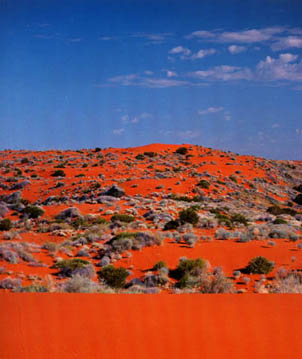

|
最後に
 アボリジニーの研究を通して私はアボリジニーから多くのことを学んだ。ドリーミングの概念は、私がオーストラリアに住んでいるときには全然知らなく私にとって未知の部分であった。私の住んでいた町はアボリジニーの人口が他の町に比べて比較的多く、学校でもアボリジニーに触れ合うことが多かった。しかし本文でも取り上げたように、アルコール中毒のアボリジニーが多く伝統的なアボリジニーの信条や文化を知ることはできなかった。ただ週に数回ほどアボリジニーの講師が来て、アボリジニーの言語を教わることくらいしかアボリジニーの文化に触れることができなかった。 だが、町を一歩出ると広がる赤い大地を見ると、青い限りない空を見上げると、白人たちが上陸する前にアボリジニーが生活していたときの息遣いを感じるような気がした。 オーストラリアの中心にあるエアーズロックを訪れたとき、私は初めてアボリジニーを見たような気がした。あの広い青空と赤い大地のもとで伝統楽器ディジュリドゥーを演奏するアボリジニーの姿はまさに神秘的であった。眼には見えないが、彼らの体には何かのパワーがみなぎっているような気がした。それが先祖の精霊の魂であったのかもしれない、と今私は思う。 「アボリジニーをもっと知りたい」 そして私はこのPRで伝統文化のアボリジニーと、歴史の中でのアボリジニーの両方の面を知った。その中で私はアボリジニーが過去に受けた悲劇に深く悲しい気持ちを抱いたと同時に、白人たちのその卑劣な行為に軽蔑の気持ちを抱いた。白人たちは自分たちも子供たちがいるのにも関わらず本当に子供に虐待を行っていたのだろうか？子供に対して本当に何の気持ちも抱かなかったのだろうか?私は白人の神経を疑った。私がオーストラリアで友達になった白人の子達はとても優しくて思いやりがあって、その祖先がそんなことをしていたとは考えられなかった。しばらくショックだったが、「失われた世代」で失った肉親を探す手助けする目的で運営されている機関の話を読んで、私はオーストラリアにも温かい心が存在していることを知ることとなった。 それは白人家庭で育てられた養父母との関係の問題なのだが、アボリジニーの男の子をティーンエイジャーになるまで育てたアイルランド系の夫婦の話だ。アボリジニーの子供を「ペットの黒い赤ん坊」のように育てていた隣人が、子供を施設に送ろうとしていたのを見て夫婦は子供を引き取り自分の子供たちと同じように育てることを決めた。しかし、アボリジニーの子供は思春期を迎える頃、他の兄弟と自分が違っていることに気づき反抗的になり、ある日家を出てしまった。それ以来何十年も音沙汰がない。老夫婦は語った。 「貧乏の子沢山だったけれど、一生懸命育てたんだよ」 アボリジニーの子供にとっては自分だけ違う肌の色をしている環境の中で育ったことは悲劇だったのかもしれない。だけどアボリジニーの子供をわが子同様に育ててくれた白人の親もいたことに私は強く胸をうたれた。いつかアボリジニーと白人の子供たちが過去の悲劇を繰り返さぬように、本当の意味でお互いに助け合い生きていくオーストラリアになってほしいと私は思う。 そして最後にこのＰＲを制作するのにあたって協力してくれた親友のJoslyn Prinsとその友達に感謝します。 ２００３年３月 船越真梨 . |